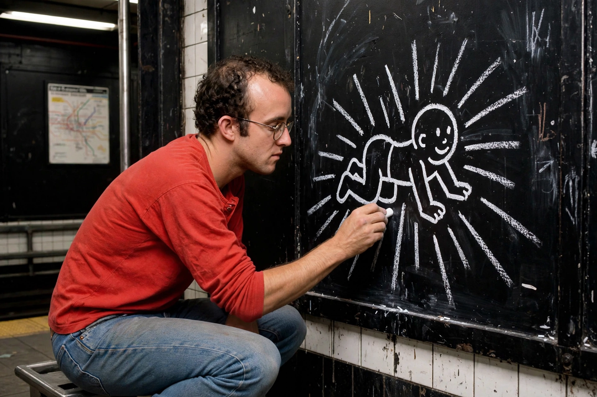

Keith Haring
From Wikipedia, the free encyclopedia

Keith Allen Haring (4 May 1958 – 16 February 1990) was an American artist whose pop art emerged from the New York City graffiti subculture of the 1980s. His bold-line figures — the Radiant Baby, the Barking Dog, dancing men — became universal icons as he carried art from subway stations to murals worldwide, using his fame for activism against apartheid, drugs and, above all, AIDS, which killed him at 31.
Career
Haring arrived in New York in 1978 to study at the School of Visual Arts, found his mature style in the city's club and street scene (with friends Jean-Michel Basquiat and Kenny Scharf), and from 1980 drew thousands of white-chalk drawings on the black paper panels of unused subway advertising space — art for commuters, constantly arrested for and constantly replaced. Gallery fame followed quickly (Tony Shafrazi, 1982); he painted murals from the Berlin Wall (1986) to Pisa, opened his Pop Shop (1986) to sell inexpensive art merchandise, and designed for Absolut, Swatch and UNICEF.
Activism and death
Diagnosed with AIDS in 1988, Haring made the epidemic his subject: the Keith Haring Foundation (1989), the 'Silence = Death' and 'Ignorance = Fear' campaigns, and murals for hospitals and schools. He died in February 1990. His imagery — instantly readable, joyous, urgent — remains the visual language of public-health and LGBTQ activism, protected and licensed by his foundation.